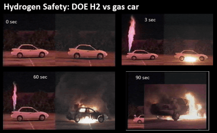

One of the main concerns of the general public for using H2 in cars is its high flammability. The 1937 disaster of the Hindenburg-class airship of 1937 may have unnerved public opinion concerning the safety of hydrogen in transportation , even though this incident was not caused by hydrogen. Nonetheless, hydrogen is by far the most flammable element in the universe. It is very unstable and only has one electron in its external shell. This means that it can be easily combined with an oxidizer, resulting in the creation of an oxidized product. Indeed, this is the equation of combustion: Combustible + Oxidizer = Oxidized Product. What also makes hydrogen extremely flammable is the low activation energy required to break an H2 bond. H is then very reactive and will combine with an oxidizer, being O from our atmosphere, creating H2O. Since combustion is exothermic, heat is released which will, in turn, break other H2 bonds creating a chain reaction.
Indeed, while H2 is very flammable, it is safer than one could expect. For example, Toyota demonstrated how safe H2 can be in a video where they shot the Mirai’s hydrogen tank with a 50-caliber bullet. The carbon-fiber tank was pierced, but the gas simply escaped - it did not catch fire. In addition, the NHTSA did an experiment in which they ignited the hydrogen tank. This demonstrated hydrogen’s properties: the H2 ignited and escaped out of the vehicle through escape valves, whereas the internal combustion engine vehicle just caught on fire as the gasoline, being a liquid, did not move. H2 is safer thanks to these escape valves and due to H2’s property as a gas. Safety is not too big of a concern with regards to hydrogen cars.

Here are photos of the experiment by the NHTSA. The undamaged vehicle with rapid flame escaping from the vehicle is the hydrogen car.